画像にリンクがはってあるものは、クリックすると別窓で大きめサイズが表示されます。
[プラ神父]
所在地；プロンテラ大聖堂内(prt_church:179,15) |
| 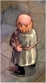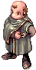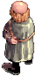 |
[アステ]
所在地；カピトーリナ修道院(prt_monk:230,106) |
| 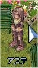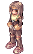 |
[ガイ神父]
所在地；カピトーリナ修道院建物内(monk_in:18,38) |
| 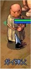 |
[犬]
所在地；カピトーリナ修道院(prt_monk:235,245) |
| 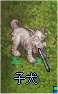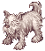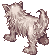 |
[少年]
所在地；カピトーリナ修道院(prt_monk:226,257) |
   |
[バイノ]
所在地；カピトーリナ修道院内(prt_monk:197,228) |
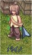  |
[ヘザー]
所在地；カピトーリナ修道院内(prt_monk:28,260) |
| 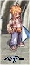 |
[武器商人]
所在地；カピトーリナ修道院内(prt_monk:135,263) |
| 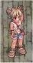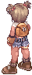 |
[カルヴィン]
所在地；カピトーリナ修道院建物内(monk_in:103,176) |
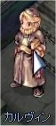 |
[グロリア]
所在地；カピトーリナ修道院(219,164) |
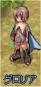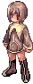 |
back
(c) Gravity Co., Ltd. & Lee MyoungJin(studio DTDS). All rights reserved.
(c) GungHo Online Entertainment, Inc. All Rights Reserved.
当コンテンツの再利用（再転載・配布など）は、禁止しています。